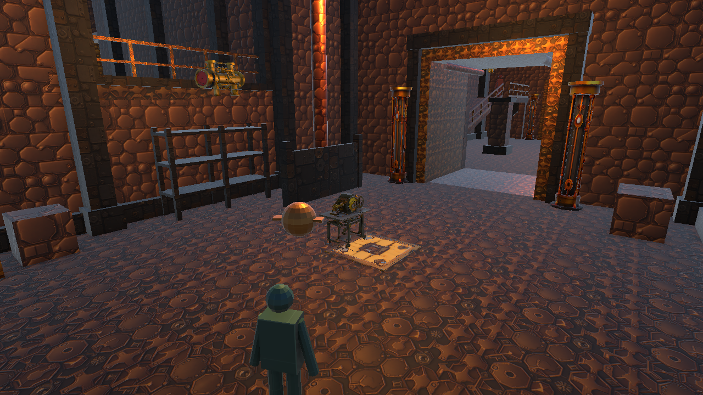
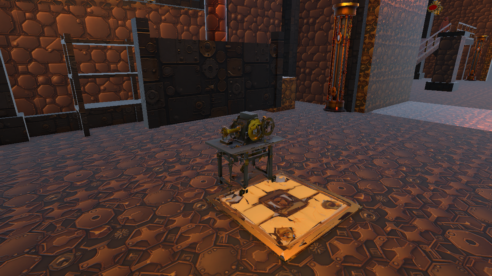
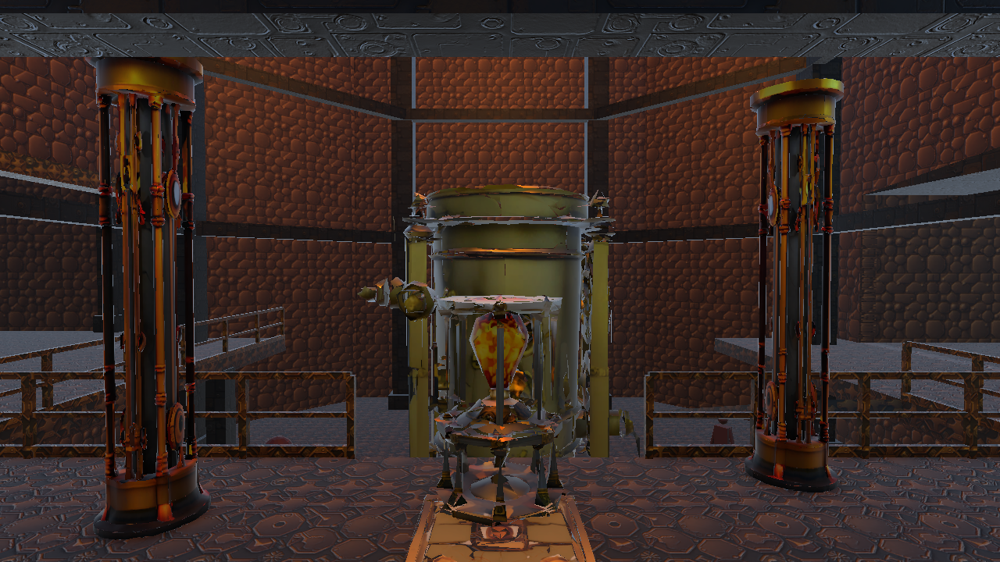
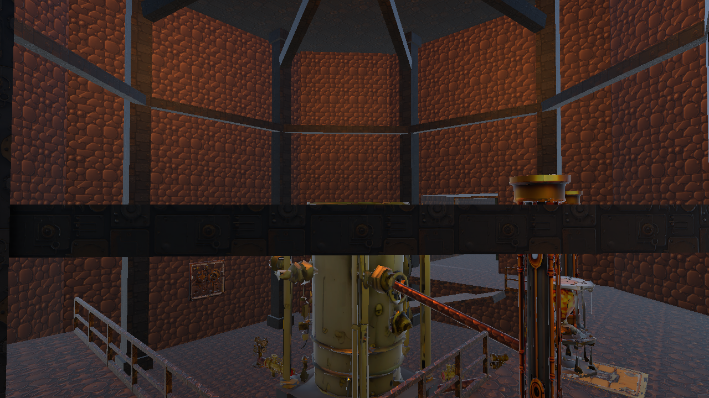
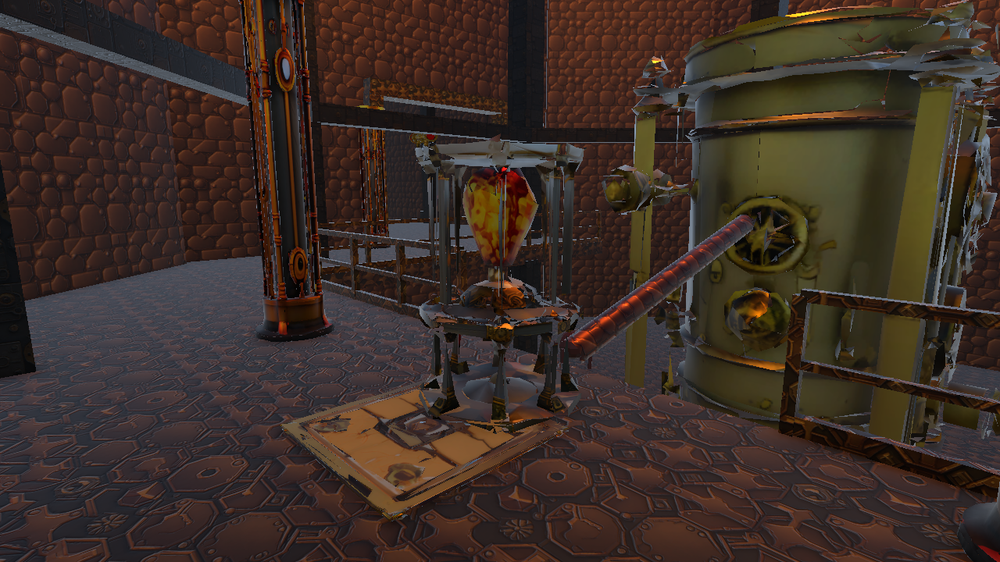
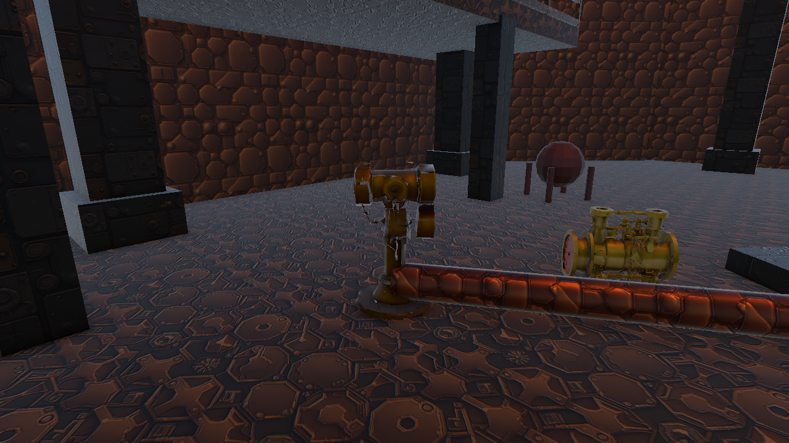
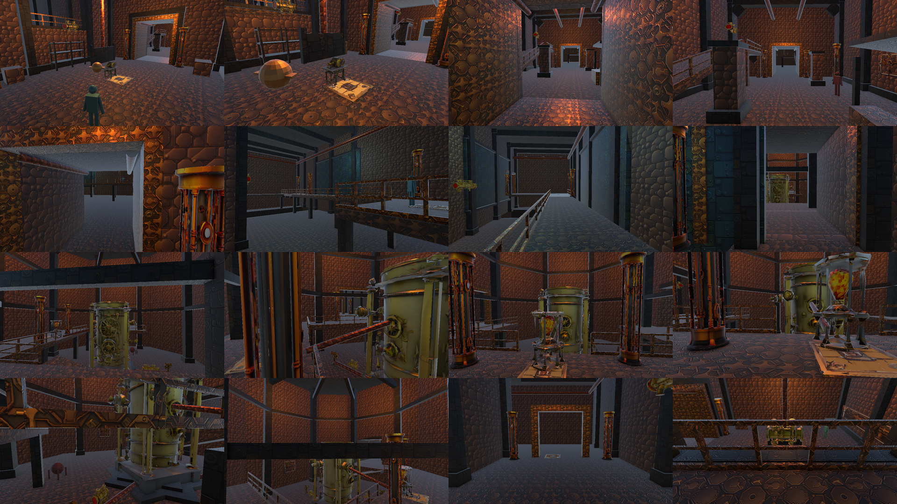

Pipeline oficial: TripoSG -> TripoSF 512 -> Hunyuan3D-Paint -> 05_trellis_pbr -> pack_glb (seed 42). Gates: glTF-Validator 4/4 PASS | validate_asset 4/4 PASS | validate_visual 4/4 PASS | validate_scene --strict PASS (5/5 luzes, 67k/150k tris, 15/120 draw calls).






